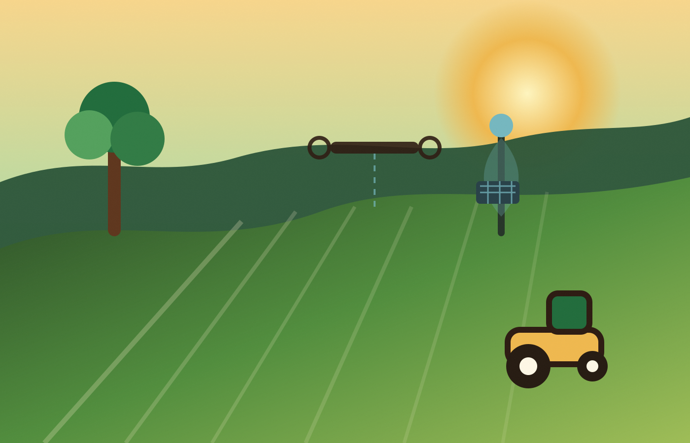
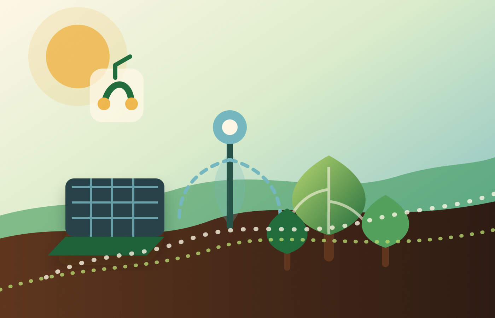

Importância do agronegócio
Espaço reservado para explicar a participação do agronegócio na economia, na geração de empregos e na produção de alimentos.
Este site apresenta a importância do agronegócio brasileiro e mostra como a produção agrícola pode crescer de forma sustentável.

A proposta do projeto é refletir sobre tecnologias, práticas sustentáveis e soluções que ajudam a preservar os recursos naturais.
Espaço reservado para explicar a participação do agronegócio na economia, na geração de empregos e na produção de alimentos.
Espaço reservado para apresentar conservação do solo, rotação de culturas, energia limpa e irrigação sustentável.

Espaço reservado para falar sobre desmatamento, uso excessivo da água, emissão de carbono e mudanças climáticas.
Espaço reservado para apresentar reflorestamento, agricultura regenerativa, tecnologias inteligentes e educação ambiental.
Nesta parte do site poderão ser adicionados recursos como calculadora de impacto ambiental, quiz, galeria comparativa e mapa agrícola.
Espaço reservado para mensagem final, formulário de contato e incentivo à preservação ambiental.